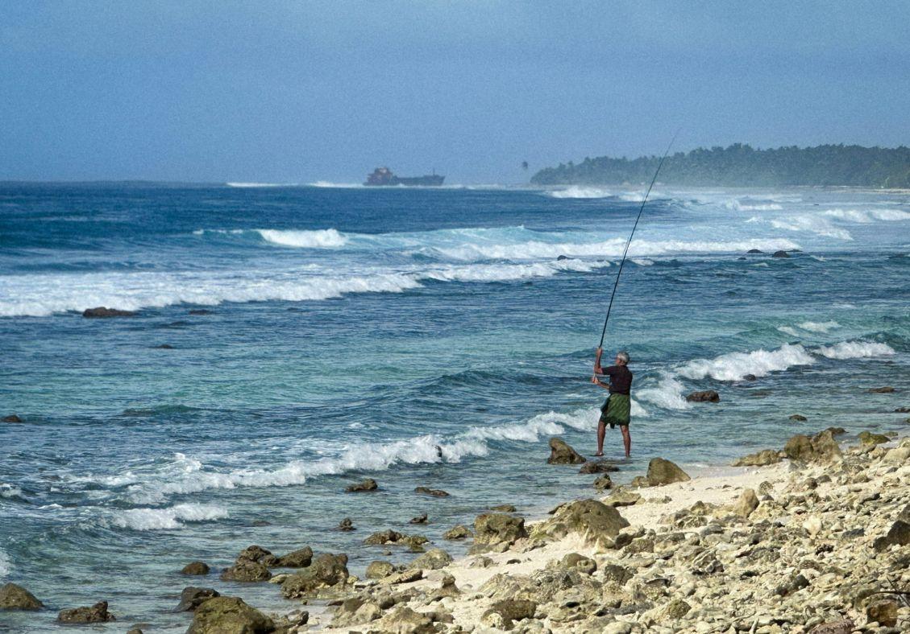
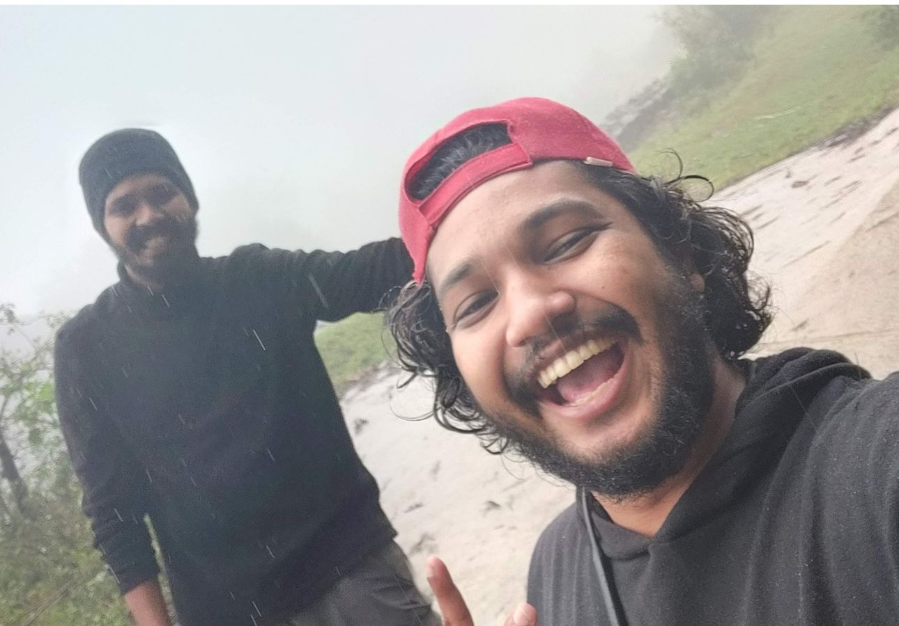
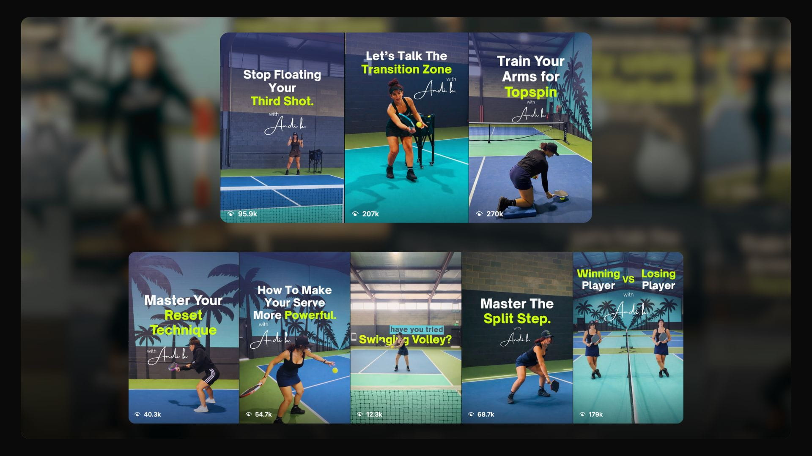
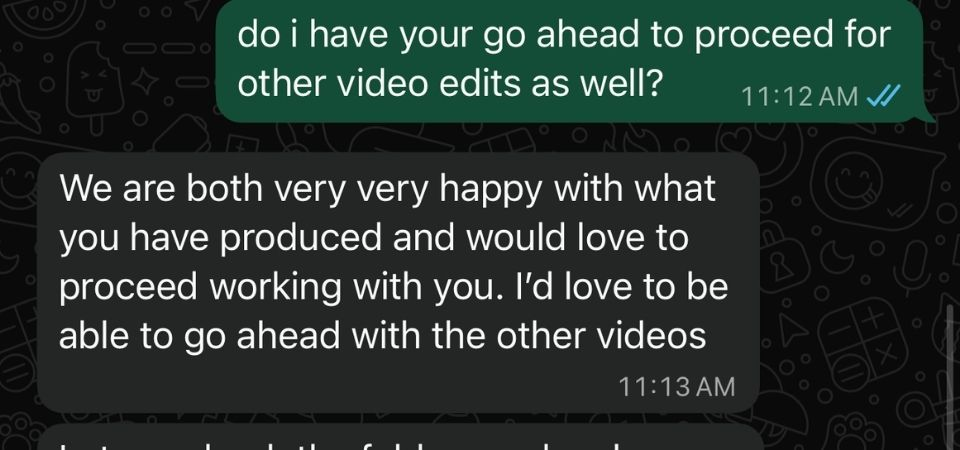
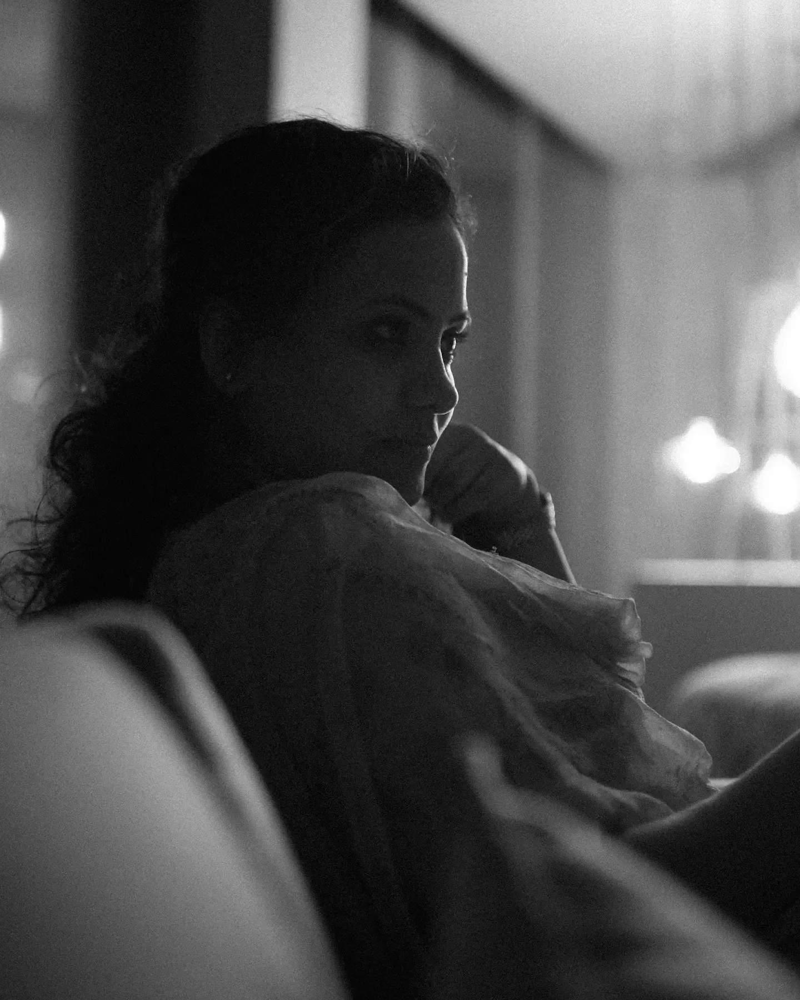
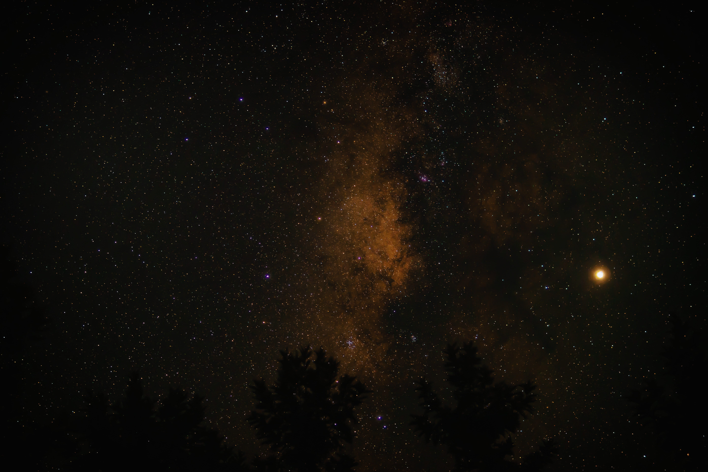
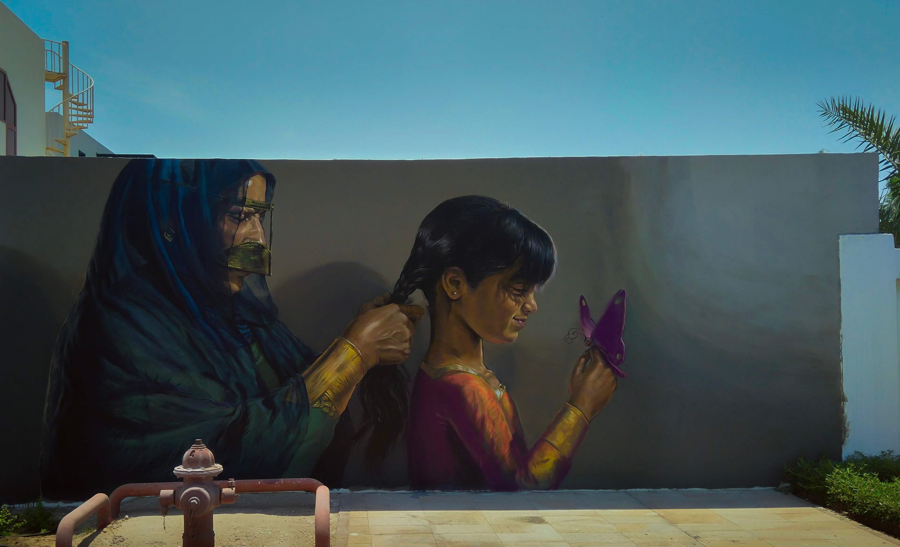

One Stormy Morning
Lakshadweep Islands 2024


This is my corner of the internet.
A collection of edits, films,
places I've been, things I've built,
and a little bit of what goes on
between the finished pieces.


Some things are easier to show
than explain.
Published work.
Client responses.
Audience reactions.
Just the evidence.




Commercial films.
Social impact Projects.
Product Explainers.
Personal films.
Below are a few edits and project.
Click on the titles to play and explore.

Years of footage.
Different cameras.
Different resolutions.
No obvious narrative.
I went through the archive, found the story,
then directed a new piece of performance
to give the film a beginning.
The goal wasn't to make an outfitter montage.
It was to let someone who had never met Luke
understand what spending a few days with him
might actually feel like.

No deer.
No conventional payoff.
The challenge was making an anticlimactic hunting
trip enjoyable anyway.
Rather than manufacture a bigger ending,
I leaned into the uncertainty that makes
bow hunting interesting in the first place.

A successful public-land hunt shaped almost entirely
around what the camera managed to capture.
Missing pieces were reconstructed through a recap
recorded by the guide.
These came from curiosity more than briefs.
Travel.
Mountains.
Cities.
Long drives.
A camera.
They taught me how I like to see.


A solo trip through the Himalayas,
shot on a Sony A6300.
The entire journey became a personal memoir.

A film about contrast. Srinagar's movement. Dal Lake's quiet. The warmth of being welcomed somewhere as a stranger.

The Neelakurunji blooms once every twelve years.
I went to the Nilgiris with a camera,
a gimbal and very little money.
I sat down for one long stretch and built
the film around the landscape.

A track I loved.
A folder full of footage.
One city.
I cut Delhi around its rhythm.
Product films. Corporate stories. Social impact. SaaS. The medium changed. The obsession didn't.

Three days.
A room full of young makers.
The objective was to capture the energy
of the participants while still communicating
the impact behind the event.
Shot by me and an associate.
Directed, edited and coloured by me.


A commercial product film created entirely
from stock footage.
Rather than listing features,
the concept was built around the perspective
of a business owner discovering what AI
could actually do for them.

A B2B SaaS explainer created for a product launch
and technology conference in Florida.
I wrote the script, shaped the narrative
and worked with a presenter who recorded
the performance in greenscreen.
Not everything I shoot belongs to a brief.
A lot of it goes up as stock — clips that get
licensed and used by people I'll never meet,
in films I'll probably never see.
It's a quieter kind of work, and a useful one.
It keeps me shooting between projects, and it
pays for the gear that shows up on the paid ones.

The edit shouldn't be trying to prove how clever the editor is. The audience should forget there's an edit happening.

More footage doesn't mean more story. Sometimes the best thing you can do is remove things.

Sound. Colour. A half-second. The frame before someone speaks. That's where a lot of the feeling lives.

Beautiful is good. But if the video doesn't solve the actual problem, we've made expensive wallpaper.


“Fasil delivered on our agreed project and exceeded my expectations.”
“He listens to every detail but also has great ideas to help with executing the desired result.”
“Reliable, works under tight deadlines. I'll be coming back for future projects.”
“Assisting us remotely with our digital presence, media post-production frameworks, and corporate messaging structure.”
A small collection of frames from my camera roll, travel and works.
Mostly here to show you how I see the world.






